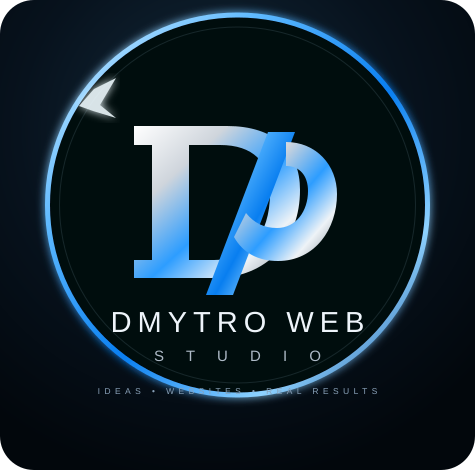

Сайти для бізнесу
Структура, дизайн, адаптивність і сильна презентація послуг.
LANDING · CORPORATE · PORTFOLIO
↗ Обговорити проєктDMYTRO WEB STUDIO · UKRAINE
Дизайн, розробка та автоматизація, які допомагають бізнесу виглядати професійно та працювати зручніше.
ROYAL PET
Продумую структуру, візуал і шлях користувача.
Додаю функції, які вирішують задачі бізнесу.
Залишаю основу для подальшого розвитку.
ПРО МЕНЕ
Мета кожного проєкту — поєднати сильний візуал із реальною користю для бізнесу. Тому я думаю не тільки про те, як сайт виглядає, а й про те, як людина ним користується та як власник ним керує.
ПОСЛУГИ
Підбираю рішення під завдання бізнесу — від односторінкового сайту до системи з онлайн-записом та адмін-панеллю.
Структура, дизайн, адаптивність і сильна презентація послуг.
LANDING · CORPORATE · PORTFOLIOДата, послуга, точні доступні години та заявки.
BOOKING · CALENDARКерування записами, контентом, послугами, відгуками та клієнтами.
DASHBOARD · CRMAPI, база даних, інтеграції та бізнес-логіка.
API · D1 · CLOUDFLAREЄдиний досвід на телефоні, планшеті та комп'ютері.
MOBILE · TABLET · DESKTOPРозвиток проєкту після запуску та додавання нових функцій.
UPDATES · GROWTHПОРТФОЛІО
Повноцінний сайт грумінг-студії з послугами, портфоліо, відгуками, онлайн-записом і власною адмін-панеллю.
ЯК ПРАЦЮЮ
Розбираємо бізнес, цілі, аудиторію та потрібні функції.
Створюю структуру, візуальний напрям і ключові екрани.
Перетворюю дизайн на швидкий адаптивний сайт.
Тестування, підключення сервісів і передача готового продукту.
ГОТОВІ ПОГОВОРИТИ?
Опиши бізнес і те, що має робити майбутній сайт. Підберемо структуру та формат реалізації.